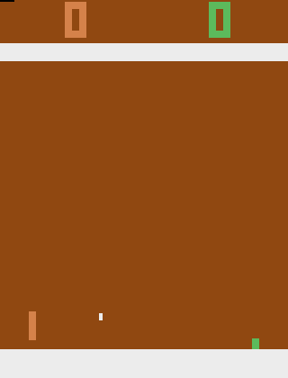
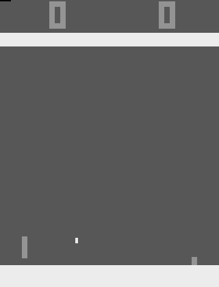
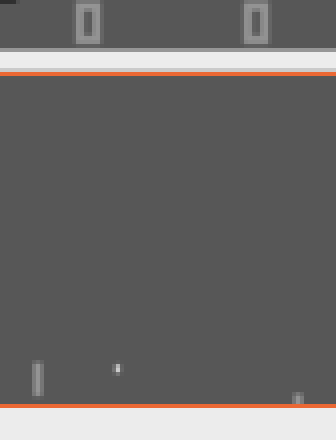
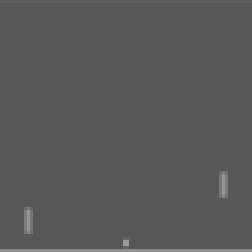
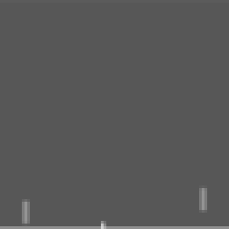
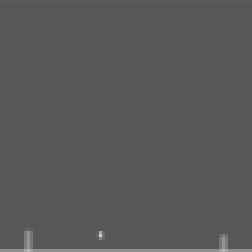
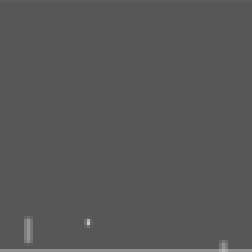

Teaching a neural network to play Atari from pixels alone
In 2013 DeepMind showed that one algorithm, with no game-specific knowledge, could learn to play Atari games just by watching the screen and the score. This is that paper rebuilt from scratch in about 500 lines of Python, trained on a laptop CPU, with every piece explained.
The trained agents playing one episode each, at real speed. They choose a new action every 4th frame and still pick a random action 5% of the time, as in the paper's evaluation.
One loop, repeated millions of times
The agent never sees the game's code, the position of the ball, or the rules. It gets the same thing a person gets: the picture on the screen, and the score going up or down. Everything it learns, it learns from that.
Each turn: look at the screen, pick a button, see what happens to the score. Store that experience. Then pull 32 random old experiences out of memory and nudge the network so its predictions about them get a little more accurate. The rest of this page goes through each box.
From a 210×160 colour screen to an 84×84×4 stack
A raw Atari frame has 100,800 colour values, and a single frame can't tell you which way the ball is moving.
The paper's preprocessing function φ shrinks the input and adds motion:

Raw 210×160 RGB
Greyscale
110×84, crop marked



Frame skipping
The Atari runs at 60 frames a second. The agent only looks and decides every 4th frame, and its chosen button is held down for the frames in between (Space Invaders uses 3, so its blinking lasers don't vanish). That makes play 4× cheaper with almost no loss, since nothing important happens in 1/60 of a second. The rewards from the skipped frames are added up.
Reward clipping
Scores differ wildly between games: a point in Pong, hundreds in Space Invaders. So every positive reward becomes +1, every negative one −1, and zero stays zero. One learning rate then works for every game, at the cost of the agent not knowing a big reward from a small one.
Code: dqn/env.py talks to the emulator directly and implements all of the above in ~60 lines.
A small convolutional network that scores every button at once
The network's job is to answer: "If I press this button now and play well afterwards, how much reward will I collect?" That number is called Q(s, a), the action value. Instead of asking the network once per button, it outputs a Q-value for every legal button in one pass, and the agent presses the highest.
The convolutions learn to find things like the ball and the paddles; the stack of four frames lets them see motion. The same architecture and hyperparameters are used for every game: only the number of outputs changes.
class QNetwork(nn.Module): def __init__(self, n_actions, history=4): self.features = nn.Sequential( nn.Conv2d(history, 16, kernel_size=8, stride=4), nn.ReLU(), nn.Conv2d(16, 32, kernel_size=4, stride=2), nn.ReLU(), nn.Flatten()) self.head = nn.Sequential( nn.Linear(32 * 9 * 9, 256), nn.ReLU(), nn.Linear(256, n_actions))
Code: dqn/model.py
Q-learning: make today's guess agree with tomorrow's
Nobody tells the agent what the right Q-values are. The trick is the Bellman equation: the value of pressing a button now equals the reward you get right away, plus the (discounted) value of the best thing you can do next.
So after each experience (s, a, r, s′) we have a slightly better estimate than the network's own guess,
called the target, and we train the network to move towards it:
γ = 0.99 is the discount: a reward one step away is worth 99% of a reward now, so the agent cares about the future but prefers sooner.
The target uses the same network but is held fixed while taking the gradient step (no gradient flows through y).
The 2013 paper has no separate "target network"; that came in the 2015 follow-up. The Breakout agent here follows the 2013 setup.
The published Pong agent uses a faster-learning recipe that includes a target network: its targets come from a frozen copy of
the network, refreshed every 1,000 steps (see Differences for why).
def td_targets(self, rewards, next_states, dones): with torch.no_grad(): next_max = self.net(next_states).max(dim=1).values return rewards + self.cfg.gamma * next_max * (1.0 - dones) def learn(self, batch): targets = self.td_targets(rewards, next_states, dones) q = self.net(states).gather(1, actions.unsqueeze(1)).squeeze(1) loss = mse_loss(q, targets) # (y - Q(s,a))^2 loss.backward(); self.optimizer.step() # RMSProp
Code: dqn/agent.py
Learning from a shuffled memory, not the last few seconds
If the network trained on experiences in the order they happened, every minibatch would be 32 nearly identical frames from the same rally. The updates would be strongly correlated, and the network would chase whatever it saw last and forget the rest. The paper's fix, and its key idea:
Every transition (s, a, r, s′) goes into a memory holding the most recent 1,000,000. Old ones fall off the end.
Each update draws 32 transitions uniformly at random from the whole memory. They come from different moments and different games, so they're far less correlated, and each experience gets reused many times.
Fitting a million states in memory
A million stacks of four 84×84 frames would be 28 GB. But consecutive states share three of their four frames, so the memory stores each frame once (7 GB for a million) and rebuilds the stack of four when it samples. Near the start of an episode the missing older frames are filled with the episode's first frame, exactly as the agent does while playing.
Code: dqn/replay.py, with tests for episode boundaries and wrap-around in tests/test_dqn.py.
ε-greedy: mostly greedy, sometimes random
An agent that always presses its current favourite button never finds out whether the others are better. So with probability ε it presses a random button instead. ε starts at 1 (pure random play, since the untrained network knows nothing) and falls linearly to 0.1 over the first million frames, then stays there. Evaluation uses ε = 0.05.
Algorithm 1, line by line
This is the paper's whole algorithm. Each line links to where it lives in the code.
- Initialise replay memory D with capacity N replay.py
- Initialise Q with random weights model.py
- for episode = 1 … M do
- Reset the game; s₁ = φ(first screen), padded to 4 frames FrameHistory
- for t = 1 … T do
- With probability ε pick a random action, else aₜ = argmaxₐ Q(sₜ, a) act()
- Repeat aₜ for k frames; observe reward rₜ and next screen step()
- sₜ₊₁ = φ(last 4 screens); store (sₜ, aₜ, clip(rₜ), sₜ₊₁) in D train.py
- Sample a random minibatch of 32 transitions from D sample()
- Set yⱼ = rⱼ if the episode ended, else rⱼ + γ maxₐ′ Q(sⱼ₊₁, a′) td_targets()
- Gradient step on (yⱼ − Q(sⱼ, aⱼ))² with RMSProp learn()
| Hyperparameter | Paper (2013) | Breakout here | Pong here (fast recipe) |
|---|---|---|---|
| Minibatch size | 32 | 32 | 32 |
| Replay memory | 1M | 1M | 100k |
| Frame skip k | 4 (3 for Space Invaders) | 4 | 4 |
| ε schedule | 1 → 0.1 over first 1M frames | 1 → 0.1 over 250k steps (= 1M frames) | 1 → 0.1 over 100k steps |
| Optimiser | RMSProp | RMSProp, lr 2.5×10⁻⁴ * | Adam, lr 1×10⁻⁴ |
| Discount γ | not stated | 0.99 * | 0.99 |
| Updates | every step | every 4th step * | every step |
| Target network | none | none | refreshed every 1k steps |
| Random steps before learning | not stated | 50k * | 10k |
| Training length | 10M frames per game | see results | see results |
* Not specified in 2013 or changed for CPU time; values from DeepMind's 2015 Nature paper. The Pong column is a commonly used fast-learning setup, not the paper's. See Differences.
Does it work on a laptop?
Each chart shows one game. Every 25,000 steps (Pong) or 50,000 steps (Breakout) training paused and the agent played 10,000 steps with ε = 0.05; the blue line is its average score per game. The orange line is the score of the training games themselves (with exploration, so lower). Dashed lines are the paper's reference scores. On the Pong chart, the aqua and yellow lines are the two earlier runs with the paper's own settings, which never learned.
The paper's Figure 2: average predicted value
Scores are noisy: one lucky rally changes them a lot. The paper also tracked a smoother signal: before training, collect a fixed set of 500 states with random play, and after each epoch average the network's highest Q-value over them. It should rise steadily as the agent expects more future reward.
Against the paper's Table 1
| Game | Random | Human | Paper DQN | This agent (best epoch) | Training steps |
|---|
Average total reward per episode with ε = 0.05; "best epoch" is the highest evaluation, each over 2–5 games for Pong, so expect noise. Random, human and DQN scores are from Table 1 of Mnih et al. 2013, which trained for 10M frames per game on a GPU.
What the agent expects, frame by frame
The paper's Figure 3 plotted the predicted value, maxₐ Q(s, a), over a stretch of play to show that it rises and falls sensibly. Here it is for a full episode of the trained agent. Play the video or drag along the chart: the bars show the Q-value of every button at that moment, and the highlighted one is the button the network prefers.
Markers on the line show where a point was won (+1) or lost (−1). Watch the value climb as the ball heads for a point the agent is about to win, and drop when it is about to lose one. The Breakout agent rarely presses FIRE, so it often waits in the corner until a random action happens to serve: in this recording, for about 25 seconds.
Where this differs from the paper
- Less training. The paper trained each game for 10M frames on a GPU. This was trained on a 2019 laptop CPU, so the runs are far shorter (lengths are in the results table). Breakout was stopped at 350k steps when the laptop ran out of RAM running two games at once; its best checkpoint, from 300k steps, is the one shown.
- A different recipe for Pong. Pong was first trained with the paper's settings, twice. Without a target network, it was still losing every point after 750k steps, pressing one button almost every step. With the 2015 paper's target network added, it was still at −21 after 850k steps; its Q-values barely told the buttons apart and didn't react to the ball. Those settings were tuned for 10M+ steps on a GPU and typically need 1–2.5M steps to start winning Pong, which is more than a day on this laptop. The published Pong agent uses a common fast-learning recipe instead: same network, preprocessing and Q-learning, but Adam (lr 10⁻⁴), a target network refreshed every 1,000 steps, an update every step, a 100k replay memory and faster exploration decay. It started winning at 275k steps. Both earlier runs are on the Pong chart.
- Breakout: an update every 4 steps, not every step. Algorithm 1 does a gradient step after every action. On this CPU that runs at ~45 steps a second. Updating every 4th step (as DeepMind did from 2015 on) is ~4× faster per step, and each transition is still replayed many times.
- Filling in what the paper didn't say. The 2013 paper doesn't give the discount, learning rate, RMSProp settings or how much random play precedes learning. For Breakout these come from the 2015 Nature paper: γ = 0.99, lr = 2.5×10⁻⁴, 50,000 random steps first.
- "Frames" read literally. For Breakout, ε falls over the first million emulator frames, which is 250,000 agent steps at k = 4.
- Not one set of hyperparameters. The paper used the same settings for every game. Here Pong and Breakout use different ones (see the table under Algorithm 1).
- Same as the paper, for both games: network, preprocessing, frame skip, reward clipping, minibatch size, squared-error loss, ε-greedy with ε = 0.05 for evaluation.
Three commands
git clone https://github.com/amalmehta/AtariRL && cd AtariRL
python3.11 -m venv .venv && .venv/bin/pip install -r requirements.txt
.venv/bin/python -m dqn.train --game pong --steps 500000 --optimizer adam --lr 0.0001 --target-update 1000 --update-every 1 \
--replay-capacity 100000 --replay-start 10000 --eps-anneal-steps 100000 --eval-every 25000
Any of the paper's games works: breakout, beam_rider, enduro, qbert,
seaquest, space_invaders. Then watch the result with python -m dqn.play --run runs/pong --out pong.
Full instructions are in INSTRUCTIONS.md, and how it all
fits together is in SYSTEM-DESIGN.md.